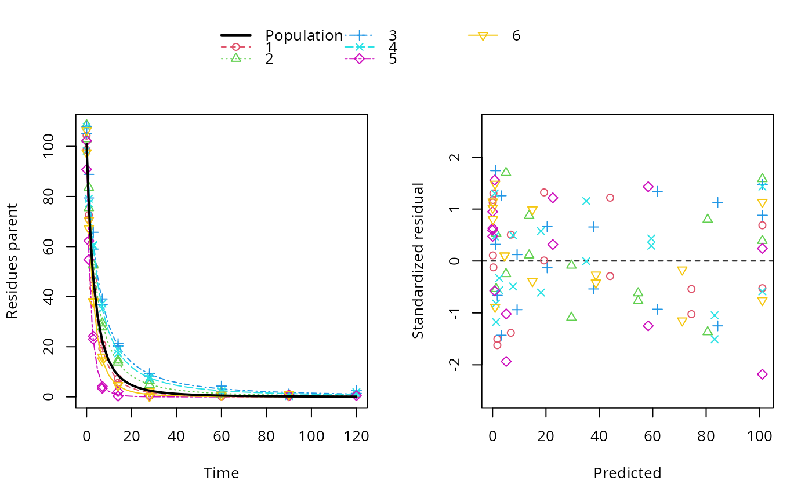

Fit nonlinear mixed-effects models built from one or more kinetic degradation models and one or more error models
Source:R/mhmkin.R
mhmkin.RdThe name of the methods expresses that (multiple) hierarchichal (also known as multilevel) multicompartment kinetic models are fitted. Our kinetic models are nonlinear, so we can use various nonlinear mixed-effects model fitting functions.
Usage
mhmkin(objects, ...)
# S3 method for class 'mmkin'
mhmkin(objects, ...)
# S3 method for class 'list'
mhmkin(
objects,
backend = "saemix",
algorithm = "saem",
no_random_effect = NULL,
...,
cores = if (Sys.info()["sysname"] == "Windows") 1 else parallel::detectCores(),
cluster = NULL
)
# S3 method for class 'mhmkin'
x[i, j, ..., drop = FALSE]
# S3 method for class 'mhmkin'
print(x, ...)Arguments
- objects
A list of mmkin objects containing fits of the same degradation models to the same data, but using different error models. Alternatively, a single mmkin object containing fits of several degradation models to the same data
- ...
Further arguments that will be passed to the nonlinear mixed-effects model fitting function.
- backend
The backend to be used for fitting. Currently, only saemix is supported
- algorithm
The algorithm to be used for fitting (currently not used)
- no_random_effect
Default is NULL and will be passed to saem. If a character vector is supplied, it will be passed to all calls to saem, which will exclude random effects for all matching parameters. Alternatively, a list of character vectors or an object of class illparms.mhmkin can be specified. They have to have the same dimensions that the return object of the current call will have, i.e. the number of rows must match the number of degradation models in the mmkin object(s), and the number of columns must match the number of error models used in the mmkin object(s).
- cores
The number of cores to be used for multicore processing. This is only used when the
clusterargument isNULL. On Windows machines, cores > 1 is not supported, you need to use theclusterargument to use multiple logical processors. Per default, all cores detected byparallel::detectCores()are used, except on Windows where the default is 1.- cluster
A cluster as returned by makeCluster to be used for parallel execution.
- x
An mhmkin object.
- i
Row index selecting the fits for specific models
- j
Column index selecting the fits to specific datasets
- drop
If FALSE, the method always returns an mhmkin object, otherwise either a list of fit objects or a single fit object.
Value
A two-dimensional array of fit objects and/or try-errors that can be indexed using the degradation model names for the first index (row index) and the error model names for the second index (column index), with class attribute 'mhmkin'.
An object inheriting from mhmkin.
Examples
# \dontrun{
# We start with separate evaluations of all the first six datasets with two
# degradation models and two error models
f_sep_const <- mmkin(c("SFO", "FOMC"), ds_fomc[1:6], cores = 2, quiet = TRUE)
f_sep_tc <- update(f_sep_const, error_model = "tc")
# The mhmkin function sets up hierarchical degradation models aka
# nonlinear mixed-effects models for all four combinations, specifying
# uncorrelated random effects for all degradation parameters
f_saem_1 <- mhmkin(list(f_sep_const, f_sep_tc), cores = 2)
status(f_saem_1)
#> error
#> degradation const tc
#> SFO OK OK
#> FOMC OK OK
#>
#> OK: Fit terminated successfully
# The 'illparms' function shows that in all hierarchical fits, at least
# one random effect is ill-defined (the confidence interval for the
# random effect expressed as standard deviation includes zero)
illparms(f_saem_1)
#> error
#> degradation const tc
#> SFO sd(parent_0) sd(parent_0)
#> FOMC sd(log_beta) sd(parent_0), sd(log_beta)
# Therefore we repeat the fits, excluding the ill-defined random effects
f_saem_2 <- update(f_saem_1, no_random_effect = illparms(f_saem_1))
status(f_saem_2)
#> error
#> degradation const tc
#> SFO OK OK
#> FOMC OK OK
#>
#> OK: Fit terminated successfully
illparms(f_saem_2)
#> error
#> degradation const tc
#> SFO
#> FOMC
# Model comparisons show that FOMC with two-component error is preferable,
# and confirms our reduction of the default parameter model
anova(f_saem_1)
#> Data: 95 observations of 1 variable(s) grouped in 6 datasets
#>
#> npar AIC BIC Lik
#> SFO const 5 574.40 573.35 -282.20
#> SFO tc 6 543.72 542.47 -265.86
#> FOMC const 7 489.67 488.22 -237.84
#> FOMC tc 8 406.11 404.44 -195.05
anova(f_saem_2)
#> Data: 95 observations of 1 variable(s) grouped in 6 datasets
#>
#> npar AIC BIC Lik
#> SFO const 4 572.22 571.39 -282.11
#> SFO tc 5 541.63 540.59 -265.81
#> FOMC const 6 487.38 486.13 -237.69
#> FOMC tc 6 402.12 400.88 -195.06
# The convergence plot for the selected model looks fine
saemix::plot(f_saem_2[["FOMC", "tc"]]$so, plot.type = "convergence")
# The plot of predictions versus data shows that we have a pretty data-rich
# situation with homogeneous distribution of residuals, because we used the
# same degradation model, error model and parameter distribution model that
# was used in the data generation.
plot(f_saem_2[["FOMC", "tc"]])

# We can specify the same parameter model reductions manually
no_ranef <- list("parent_0", "log_beta", "parent_0", c("parent_0", "log_beta"))
dim(no_ranef) <- c(2, 2)
f_saem_2m <- update(f_saem_1, no_random_effect = no_ranef)
anova(f_saem_2m)
#> Data: 95 observations of 1 variable(s) grouped in 6 datasets
#>
#> npar AIC BIC Lik
#> SFO const 4 572.22 571.39 -282.11
#> SFO tc 5 541.63 540.59 -265.81
#> FOMC const 6 487.38 486.13 -237.69
#> FOMC tc 6 402.12 400.88 -195.06
# }